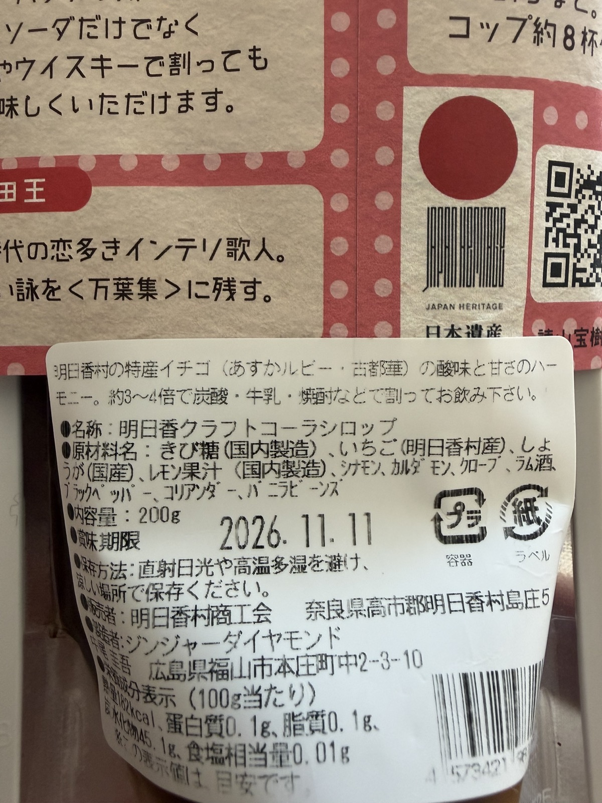

クラフトコーラを自宅で再現するWBSを作ってみた
今回は「WBSで覗いてみた」シリーズとして、「クラフトコーラを自宅で再現するWBS」を作成しました。
奈良県明日香村を訪れた際に購入した『明日香クラフトコーラシロップ』の味を自宅キッチンで再現することを想定し、現物の原材料表示ラベルを手がかりに配合を設計して、仕込み・煮出し、熟成、実食・検証に至る一連のプロセスをWBSに落とし込みました。
作業タスクの依存関係や所要工数、食品・熟成プロセス特有の時間構造について検証していきます。
1. 目指すクラフトコーラと前提条件
まずは、今回再現を目指すクラフトコーラの概要と前提条件を整理します。
題材とするのは、奈良県明日香村で販売されているクラフトコーラシロップです。パッケージには地域の歴史にちなんだイラストがあしらわれており、特産品を活かした風味が特徴です。


図2の原材料表示ラベルを確認すると、食品表示基準に従い使用重量の多い順に原材料が記載されています。
記載順序は「きび糖、いちご、しょうが、レモン果汁、シナモン、カルダモン、クローブ、ラム酒、ブラックペッパー、コリアンダー、バニラビーンズ」となっています。主原料となる甘味（きび糖）に続き、いちごと生姜、柑橘果汁が主軸を担っており、スパイス類に加えて「ラム酒」が風味付けに使用されている点が特徴です。
この原材料表示を手がかりに、自宅キッチン（仕上がりシロップ約400〜500ml分）での再現レシピを以下のように設計しました。
| 分類 | 原材料 | 分量 | 役割・下処理 |
|---|---|---|---|
| ベース・甘味 | きび砂糖 | 250g | コクとまろやかな甘味 |
| 水 | 200ml | 果汁の水分を見越して控えめに設計 | |
| フレッシュ素材 | いちご | 120g | ヘタを取り縦4等分にカット |
| 生姜（国産・皮付き） | 30g | 薄切りスライス（スパイシーなキレ） | |
| レモン果汁 | 大さじ3 | 生レモン搾汁 ＋ ピール少々 | |
| スパイス・香料 | シナモンスティック | 2本 | 手で2〜3つに割る |
| カルダモン（ホール） | 5g | さやを軽く割って種を露出 | |
| クローブ（ホール） | 4g | コーラ香の主軸 | |
| ブラックペッパー（ホール） | 2g | 後味の引き締め | |
| コリアンダーシード | 2g | 柑橘系の爽やかな余韻 | |
| バニラビーンズ | 1/2本 | さやを裂き種をこそぎ落とす | |
| 仕上げ・風味 | ダークラム | 大さじ1〜1.5 | 火を止める直前に添加（芳醇な香り） |
プロジェクトの前提条件は以下の通りです。
- リソース体制：自分1名（外部リソース：宅配業者）。
- プロジェクトのスコープ：レシピ設計・調達から、調理、熟成、濾過、3通りの割り方（炭酸水、牛乳、ウイスキー）による実食評価まで。瓶やパッケージラベルの作成・デザイン等はスコープ外とし、自宅の耐熱ガラス容器・グラスを使用します。
- 成果物：特製クラフトコーラシロップ原液 約400〜500ml、実食評価。
2. WBSを作成する
前提条件をもとに、全作業項目を洗い出し、タスク間の依存関係と所要期間を定義したガントチャートを作成しました。

図3のガントチャートから、全体の工程構造と所要期間の特徴が確認できます。
工程は全体包括グループ「クラフトコーラ再現プロジェクト」配下に、全4フェーズ・計10件のタスクと各フェーズの節目を示す4つの完了マイルストーンで構成されています。
| No. | フェーズ | タスク名 | 担当 | 工数 / 所要期間 | 先行タスク |
|---|---|---|---|---|---|
| フェーズ1 | レシピ設計・調達（所要期間: 3日 / 実作業: 2.0h） | ||||
| 1 | - | 現物ラベル分析＆配合比率設計 | 自分 | 1.0h | - |
| 2 | - | ホールスパイス・食材の手配 | 自分 | 1.0h | No.1 |
| 3 | - | スパイス・資材の配送待ち | 宅配業者 | 3日 | No.2 |
| - | マイルストーン | レシピ設計・原料調達 完了 | 0日 | No.3 | |
| フェーズ2 | 仕込み・加熱抽出（所要期間: 1.5h / 実作業: 1.5h） | ||||
| 4 | - | 下処理（いちごカット・生姜スライス・スパイス破砕） | 自分 | 0.5h | マイルストーン1 |
| 5 | - | 鍋煮出し（いちご・生姜・スパイス・きび糖） | 自分 | 0.5h | No.4 |
| 6 | - | 火止め・バニラ＆ラム酒投入・粗熱取り | 自分 | 0.5h | No.5 |
| - | マイルストーン | 仕込み・加熱抽出 完了 | 0日 | No.6 | |
| フェーズ3 | 熟成・濾過（所要期間: 12.5h / 実作業: 0.5h） | ||||
| 7 | - | 冷蔵庫での一晩熟成（寝かせ 12時間） | - | 12h | マイルストーン2 |
| 8 | - | ファインメッシュ/ネルによる濾過 | 自分 | 0.5h | No.7 |
| - | マイルストーン | 一晩熟成・濾過 完了 | 0日 | No.8 | |
| フェーズ4 | 実食・検証（所要期間: 1.5h / 実作業: 1.5h） | ||||
| 9 | - | 炭酸水割り（クラフトコーラ）の実食 | 自分 | 0.5h | マイルストーン3 |
| 10 | - | 牛乳割り（チャイ風）＆ウイスキー割りの実食 | 自分 | 1.0h | No.9 |
| - | マイルストーン | 実食・テイスティング 完了 | 0日 | No.10 | |
プロジェクト全体の所要期間は「約4日〜5日間」となっています。このうち、自分自身が手を動かす実作業工数は計4.5時間（レシピ設計1.0h、調達手配1.0h、調理1.5h、濾過0.5h、実食1.5hのうち直接作業分）です。
所要期間の大半は、ネット注文したスパイスの配送待ち時間（3日）と、煮出し後の粗熱を取ったシロップを冷蔵庫で寝かせる「一晩熟成（12時間）」が占めています。
3. プロジェクトのポイントと時間構造
本WBSにおける管理上のポイントと、時間構造の特徴について整理します。
味覚のクリティカルパス：冷蔵庫での一晩熟成（12時間）
加熱直後のクラフトコーラシロップは、生姜やブラックペッパー、クローブの強い刺激や柑橘の酸味が際立っており、全体の風味がまとまっていません。
冷蔵庫内で12時間静置することで、スパイスの精油成分ときび糖の糖分、いちごの果汁エキスが馴染み、角の取れたまろやかな味わいへ変化します。この12時間は人的リソースの稼働を伴わない待機時間ですが、後続の濾過および実食へと直結する絶対的なクリティカルパスとなっています。
食品・熟成プロセスを忠実に表現する「24時間稼働カレンダー」
プロジェクト管理ツール（OmniPlanなど）を用いてスケジュールをモデリングする際、標準設定の「平日8時間稼働（9:00〜17:00）」カレンダーのままタスクを入力すると、「12時間の熟成」が「1日（8時間）＋翌日4時間」のように営業日ベースで分割換算され、実態と乖離してしまいます。
配送や冷蔵庫での熟成といった工程は、夜間や休日を問わず24時間連続で推移する物理現象です。そのため、本WBSでは稼働カレンダーおよび時間表示の計算基準を「24時間/日（365日稼働）」に設定しています。これにより、12時間の寝かせや3日間の配送待ちが実態通りに可視化されます。
費用構造
今回の自宅再現プロジェクトで発生した費用は、原材料およびスパイス類の購入費用のみとなります。
- ホールスパイス類（シナモン、カルダモン、クローブ、コリアンダー、ブラックペッパー、バニラビーンズ）：約1,800円
- 生鮮食材・調味料（いちご、国産生姜、生レモン、きび砂糖）：約800円
- ダークラム（製菓用小瓶）：約400円
- 合計費用：約3,000円
小鍋、茶こし、耐熱容器などの調理器具は自宅の常備品を使用するため、新規の設備投資は発生しません。
終わりに
今回は、奈良県明日香村のクラフトコーラシロップを題材に、自宅キッチンでの再現・実食プロジェクトをWBSに分解しました。
原材料表示ラベルの記載順序から配合比率を論理的に組み立て、作業工程を分解することで、実作業工数は約4.5時間程度にとどまる一方、スパイス配送のリードタイム（3日）や一晩熟成（12時間）といった外部要因・自然現象が全体スケジュールを決定づける構造が明確になりました。
クラフトドリンクや自作レシピの工程管理、あるいは食品製造・熟成プロセスを可視化する際の参考になれば幸いです。
なお、プロジェクト計画の基礎となるWBSの作り方や平準化の考え方について詳しく知りたい方は、「WBSの勘所」や「ガントチャートの決め手は平準化」もぜひ合わせてご覧ください。
最後までお読みいただきありがとうございました。